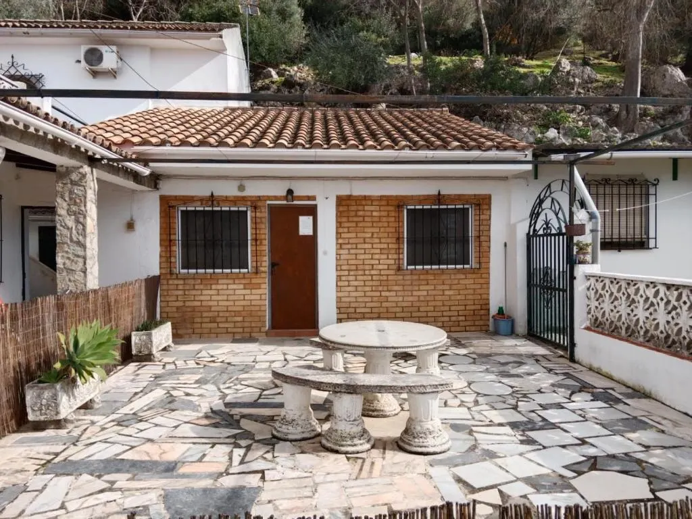
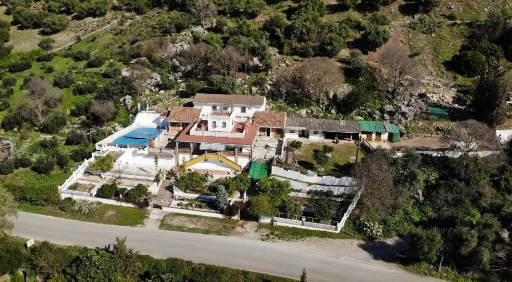
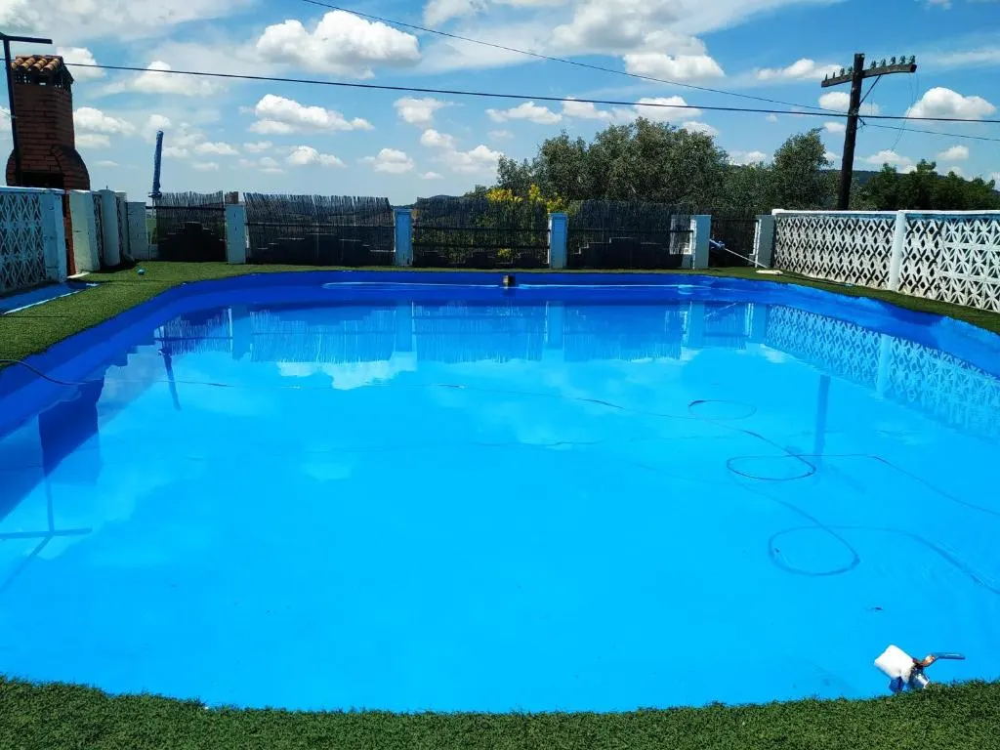
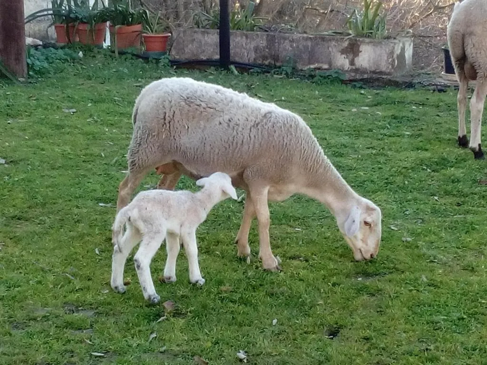

ALOJAMIENTO RURAL · EL BOSQUE, CÁDIZ
Manantial
de los Cañitos.
Unos días en la sierra.
Un lugar al que llegar.
BIENVENIDO A MANANTIAL DE LOS CAÑITOS
Unos días fuera.
Con tiempo para estar.
Manantial de los Cañitos es un alojamiento rural en El Bosque, en la Sierra de Cádiz.
La fachada blanca, el patio de piedra y el verde alrededor dan la bienvenida. Cuéntanos tus fechas y cuántas personas sois; te ayudamos a preparar la estancia.
Prepara tu visitaEL ÁLBUM DE LA CASA
Acércate.
Mira con calma.
La casa entre árboles, el azul del agua y una escena de campo. Una mirada a sus exteriores.


El alojamiento, a vista de pájaro

La piscina exterior

Una escena ruralANTES DE HACER LA MALETA
Tu estancia,
bien preparada.
La vivienda y sus comodidades
Consulta la distribución, capacidad y equipamiento de la opción disponible para tu estancia. Las fotografías muestran exteriores; solicita imágenes del interior y confirma los servicios incluidos antes de reservar.
Fechas, tarifas y reserva
Llama al 636 126 378 para conocer disponibilidad, precio y condiciones. La reserva se acuerda directamente con el alojamiento.
El acceso al alojamiento
La dirección facilitada es junto al Manantial de los Cañitos, en El Bosque. Confirma el punto de llegada por teléfono antes de desplazarte.
EL ENTORNO
11670 · CÁDIZ
El Bosque.
La sierra, cerca.
El alojamiento está en El Bosque, en la Sierra de Cádiz. Un punto de partida para conocer el pueblo y dedicar unos días a esta zona de la provincia.
Junto al Manantial de los Cañitos11670 El Bosque, CádizBuscar en el mapa Abre una búsqueda. Confirma el acceso con el alojamiento.
CONSULTA TU ESTANCIA
¿Cuándo te
apetece venir?
Cuéntanos qué días tienes en mente.
Te informamos directamente por teléfono.